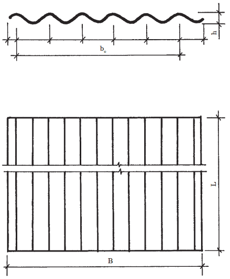
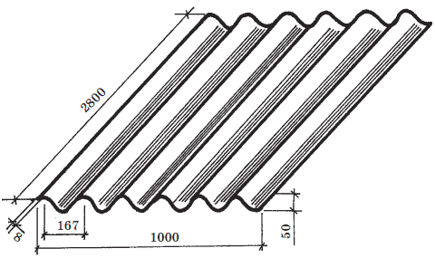

Кровля из неметаллических листов.
 Асбестоцементные листы
Асбестоцементные листы
Асбестоцемент является композиционным материалом. Его изготавливают из цемента, асбеста и воды. Он обладает высоким физико-механическими свойствами, т. к. в нем искусственный цементный камень армирован тонкими волокнами асбеста. Он обладает высокой механической прочностью при изгибе, небольшой плотностью, малой теплопроводностью, стойкостью против выщелачивания минерализованными водами, малой водопроницаемостью и высокой морозостойкостью.
Недостатки асбестоцемента – понижение прочности при насыщении водой, хрупкость и коробление при изменении влажности и токсичность.
Основным сырьем для производства асбестоцементных изделий является асбест с третьего по шестой сорт (10–20 % по массе), и портландцемент марок 300, 400, 500 (80–90 %). При производстве цветных асбестоцементных листов и изделий в состав дополнительно вводятся красители, а также цветные лаки, эмали и смолы.
Классификация асбестоцементных изделий. По форме – листы плоские, листы профилированные. Листы профилированные делят на волнистые, двоякой кривизны и листы фигурные. По назначению – кровельные, стеновые, облицовочные и листы для строительных конструкций. По способу изготовления – прессованные и непрессованные. По размерам – мелкоразмерные длиной до 2000 мм, и крупноразмерные длиной 2000 мм и более. По виду отделки лицевой поверхности – серые, неокрашенные и офактуренные.
Плитки естественного шифера (сланца). Сланцевая кровля устраивается на крышах простой конфигурации, так как сланцевые плитки – очень хрупкий кровельный материал, легко колющийся и расслаивающийся.
Подготовка плиток включает в себя две основные операции: сверление отверстий диаметром 4,5 мм и резка плиток при помощи ножовки. Для конька и ребер крыши применяются доски и стальные листы.
Волнистые асбестоцементные листы. В малоэтажном строительстве применяют в основном волнистые асбестоцементные листы. В зависимости от основных размеров и области применения они подразделяются на волнистые листы обыкновенного профиля – ВО, кровельные листы усиленного профиля – ВУ-К, стеновые листы – ВУ-С и ВУ-5, волнистые листы унифицированного профиля – УВ-6 и УВ-,5, средневолнистые листы – СВ-40, волнистые листы периодического сечения.
Волнистые листы обыкновенного профиля – «ВО». Выпускаются листы длиной 1200±15 мм, шириной 686±10 5, толщиной 5,5±0,7 0,2, шагом волны 115±2. Масса листа 9,8 кг. Лист ВО перекрывает 0,6 м площади крыши ( рис. 17). К листам ВО выпускают детали коньковые К-1 и К-2, лотковые Л-135 (для устройства ендов), угловые У-90 и У-120 (для устройства перехода ската кровли к дымовым и вентиляционным трубам).

Рис. 17. Лист асбестоцементный волнистый обыкновенного профиля – ВО
Лицевая поверхность листов может быть окрашена минеральными природными или искусственными пигментами, такими, как железный сурик, оксид хрома, редоксайд и др.
Асбестоцементные волнистые листы усиленного профиля ВУ-К имеют длину 2300–2800 мм, ширину 994, толщину 8, высоту волны 50, шаг волны 167 мм. Масса листа 36–44 кг ( рис. 18).

Рис. 18. Лист асбестоцементный волнистый усиленного профиля ВУ>К
Асбестоцементные волнистые листы унифицированного профиля. УВ-6 и УВ-7,5 укрупненного размера имеют шестиволновый профиль, ширина листа 1125 мм, длина 1750–2000 мм или 2500 мм, толщина 6–7,5 мм. Обозначение УВ-7,5-1750 указывает толщину и длину листа. Высота волны перекрываемой – 45 мм, перекрывающей – 54 мм.
Асбестоцементные листы средне-волнистые СВ-40 выпускаются длиной 1500–2500 мм, шириной 1130 мм, толщиной 5,8 мм, с шагом волны 150 мм и высотой волны 40 мм. Листы выдерживают сосредоточенную нагрузку от штампа 1500Н.
Полезная площадь листа марки СВ-40 на 90 % больше полезной площади листа марки ВО, а расход асбестоцемента на 1 м полезной площади на 5–6 % ниже.
Листы СВ-40 применяются для устройства кровель жилых, общественных и сельскохозяйственных зданий.
Безасбестовый, или цементно-волокнистый шифер, армированный целлюлозой, полиакрилами или короткими льняными волокнами, – это современный вариант традиционного шифера. Он ни в чем не уступает асбестоцементным листам. Более того, экологически чистый безасбестовый шифер был создан в качестве достойной замены экологически небезопасному асбестовому шиферу.
Ондулин – волнистый, не содержащий асбеста, листовой кровельный материал. Производится французской фирмой «Ондулин Интернейшнл» уже более 50 лет на шести фабриках в разных странах мира. Используется более чем в 100 странах мира, в том числе уже более 5 лет во всех климатических зонах России. Изготовляется он с применением целлюлозных волокон или стекловолокна, минерального наполнителя, битума и минеральных пигментов путем горячего формования смеси. Листы Ондулин выпускаются размером 2000x940 мм, а также коньковый элемент длиной 940 мм.
Внимание!
Материал долговечный, прочный, легкий, экологичный и экономичный, легко пилится ножовкой, гвоздится и быстро монтируется. Кровли из Ондулина стойки к атмосферным воздействиям, «кислотным» дождям, ультрафиолетовому облучению. Применим не только для устройства новой кровли, ремонта старой, но и как недорогое и практичное покрытие по старой кровле, когда удаление элементов старого покрытия неэкономично или неуместно в связи с возможным разрушением.
«Вартти 2000» выпускается на предприятии «Данск Етернит» в Дании – одном из ведущих мировых изготовителей продукции из волокнистого цемента, при изготовлении которой не используют вредных для здоровья веществ.
«Вартти 2000» изготавливают из цемента, волокон, увеличивающих прочность материала и воды. Из массы делают тонкие слои, которые наматывают влажными один на другой до заданной толщины листа. После предварительной закалки листы проходят автоклавную обработку под давлением 8 атм. в течение одних суток. В конце процесса пигментный слой листа покрывают акрилатной латексной краской.
Совет
Листы «Вартти-2000» не горят. Рекомендуемый уклон ската не менее 12 %. Для обрешетки рекомендуется применять доски и брусья сечением 100x38 мм (44x50 мм).
Прозрачные волнистые кровельные материалы применяются для устройства прозрачных кровель в теплицах, зимних садах, переходах, при устройстве фонарей верхнего света промышленных зданий и т. п. Отечественные заводы выпускают окрашенный в различные цвета стеклопластик – гофрированные листы на основе полиамидной, полиэфирной смолы, усиленной стекловолокнистым наполнителем. Их выпускают как в рулонах, так и в виде листов. Все большее распространение получают кровельные листы из прозрачного оргстекла, акрилового или поликарбонатного, в том числе изогнутые, самонесущие профильные листы с максимальным пролетом до 7 метров.